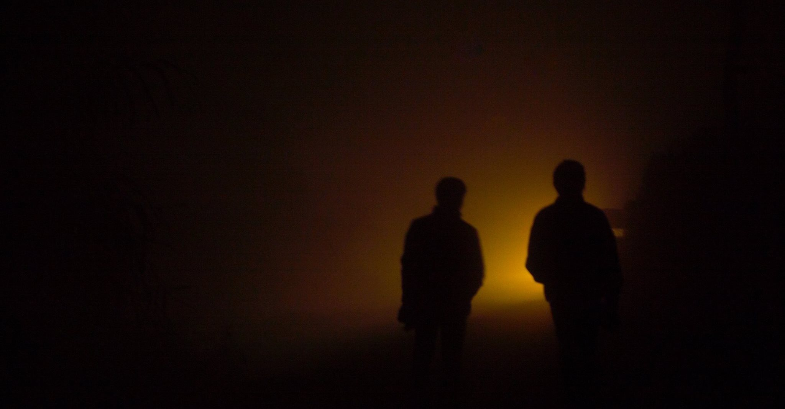

As I sat in the train all ready to trek Sandakphu again, I couldn't help but question my motives. I had already been there, why go there again? Sure, last time was solo, this time I have company. But how different an experience is this going to be?
Sandakphu, at a height of 3636 meters, is the highest point in West Bengal, India. It is a unique region as from Sandakphu you can see 4 of the 5 tallest peaks in the world. The trek is moderately easy, and takes 3 days with 11-hour walks or 4 days with 8 hour walks. The trail winds through meadows, streams and rhododendron forests, and if done at the right time, offers an opportunity to see a host of flora and fauna. April is the month if beautiful Rhododendrons are your calling.
This was October. I don't know if being colorblind has a role but I never found flowers very appealing. I was going for the love of the mountains, and October has the clearest skies in this region.
I met 2 of my friends Nirmal and Prasid at New Jalpaiguri station early in the morning. We had breakfast and then set off in search of a jeep to take us to Maneybhanjang, the base camp for our trek.
New Jalpaiguri and Siliguri are twin cities. Big and bustling. A short tuktuk ride from the station took us to the central bus stop. Shared jeeps are plenty and cheap, but it is incredibly difficult to find one that drives directly to Maneybhanjang. Instead, the journey needs to be done in 3 parts. From Siliguri to Mirik (there's a beautiful lake), then on to Sukhiyapokhari, and finally a 20-minute ride in a van till Maneybhanjang.
The trek usually extends past Sandakphu to Phalut, but we chose a shorter route. We would trek the sector up to Sandakphu in 2 days with a night stop at Gairibas down in the valley between Tumling and Kalapokhari and return on the 3rd day to Sepi or Rimbick.
The first day would see us trek around 15 Kilometers through Chitrey, Meghma and Tumling (highest point for the day), then down the valley to Gairibas, where we stop for the night. Next morning, a very steep trek up to ,Kalapokhari and then a steeper one to Sandakphu. The planned return was 16kms in a day, but steep downhill to Sepi from where jeeps are available to Darjeeling/NJP.
Maneybhanjang is a very small village right at the border between India and Nepal; it is roughly a row of houses on each side of a road. We reached Maney at around 2PM in the afternoon. It was covered with thick clouds, so the joke was on me. However, we quickly found a place to stay at the east end of the town. There are only 2-3 stays to choose from. Very basic. You get a bed, a blanket and a bathroom. But that's all that you need.
A guide is essential on such treks as they keep you from getting lost in the wilderness. The guides' union sits in a shack 5 minutes down the road. We booked a guide who promised to meet us at the hotel the next morning at sunrise. We then loitered down one of the foggy roads. Suddenly out of the mist, a small torn down blue and white building emerged. A board on top said Nepal Police. The border runs right through the village. I like these kinds of borders, borders which only exist in maps. The sun set and it was getting dark. The fog made it really hard to see anything at all. We decided that it would be a good idea to return to the hotel. We had a long day ahead.
Just as promised, our guide was outside our hotel at the break of dawn. We brushed, took a quick shower and were ready with rucksacks on our backs. The trail starts right where the town ends. A sharp u-turn and up the hill, a milestone announced that Sandakphu is 32kms away. One step at a time we made our way up. The clouds hadn't lifted yet but were not as thick as the previous day. It was cold and the walk through the thickly forested pine jungle covered with white smokey clouds, was dreamlike. Through a small opening in the cloud cover, we could see the monastery at the top. The hike up, to the monastery is steep and then becomes level. 2kms and about 45 minutes later, we finally reached the monastery.
A small shack serves coffee to the trekkers. Here shops and homes do not have a clear distinction. We went in and the friendly locals invited us right into their living room. They see tea, coffee, eggs and wai wai (instant noodle) with vegetables. It was really early and we needed coffee. So, a cup of coffee later, feeling rejuvenated, we started again. Everything was covered by thick fog now.
I remembered how different my previous experience was. When I had come here it was very sunny and I remembered the line of prayer flags that looked fantastic against the blue sky.
On a clear day, the first glimpses of the snow capped Himalayas in the north can be seen from here. Nevertheless, walking through the clouds was a magical experience. The pine forests had given way to beautiful green meadows, littered with thick bushes here and there. Suddenly out of nowhere a cute little dog started following us. We fed it biscuits and played with it a bit. It followed us some more and then bored, went on its own way. As we hiked along, we kept our gaze towards the north in the hope of catching a break in the clouds, but to no avail.
We soon left the marked trail as our guide led us up a small hillock, through some dense bushes and down the other side. A shortcut. We could see Lamaydhura in the distance. 3 shacks by the side of the road. That's it. We had been walking for the last 2 hours now, so we took a short break here and drank another cup of coffee, had a few biscuits and filled up our water bottles. 15 minutes. Our breaths back, we moved on.
The path twisted and turned through the meadows. Uphill then downhill and then uphill again. Munching on the Gooddays (biscuits) from our pockets, we kept on moving. No one else in sight. Far, far away from the chaos of city life. Away from all the worries. We were so far away from civilization that even the cell phones didn't work anymore. We were truly in the lap of nature. In peace.
After a 2-hour walk, we finally approached Meghma. Meghma is the largest town in this part of the trek. We passed its famous monastery and for the first time in a while we saw houses that were not shacks. Proper brick and mortar houses. It was noon now and we were starving.
We soon found a small restaurant serving wai wai. Wai wai up in the hills, during the treks tastes a hundred times better than any instant noodle that you would make at home. We had a quick snack and as a ritual, remembered to fill up our water bottles and started walking again.
The road here forked straight up to Tonglu, and left slightly downhill to Tumling. People who hike this route in 3 days walk till Tonglu and stay the night. But since we were on a tighter schedule, we took the shorter route through Tumling. The slightly downhill route meant that we could relax a bit. Our guide let us know that we were ahead of the schedule he had planned. So, we took our time and inched towards our next stop, Tumling.
Tumling is a typical cluster of huts like all the other villages on this trail. The border between India and Nepal cuts right through the tiny town. In fact the entire trail from Meghma to Tumling is through Nepal territory. We started receiving faint mobile signals at this point. But our guides warned us that we may well be catching the Nepal phone connections in which case, calling Home could be a costly affair. Anyway we were actually starting to enjoy the isolation so none of us really complained about not being able to make a call.
As was now the trend, we took a short break at Tumling, and then started walking again. At this point, our bodies were slowly starting to give up on us. We were really looking forward to lowering the rucksacks from our backs and hit the bed. Our guide reassured us that just downhill was a small town called Gairibas where we will be staying tonight. We were pleased for a few seconds before realizing that we will have to climb back up the same altitude we walk downhill today and more. A lot more.
Finally, after an hour's downhill walk (at a brisk pace), we reached what looked like an Indian military camp on the right and a couple of houses on the other side of the road. One of those houses was a lodge which offered beds and food at a very reasonable rate, especially when you consider the remoteness of the location. We took beds in the dormitory which was in the attic of this wooden house.
Soon after, our guide came in our little room and offered us a locally crafted alcoholic beverage called Tongba. One of the main attractions of hiking through places far away from the big cities is to try the local food and culture, so we gladly accepted the offer. The drink came in a traditional cup crafted out of bamboo as far as I can remember. You pour in hot water in the cup which contain fermented millet seeds. Let it sit and cool down, then drink it. Repeated thrice.
Tongba tasted much like red wine to me, pretty strong. I am not really fond of wine and so I only had a cup. My two friends were a different story. They claimed that Tongba took all the pain of hiking out of their bodies and happily chugged down 3 full cups before slumping to bed before being woken up for dinner 4 hours later.
Night had fallen and the temperature dipped pretty quickly. It was too cold and too dark to venture outside. Wrapped up in warmclothes, we sat in front of the small wood-fireplace in the little hut craddled at the bottom of the valley, surrounded by dark wooded hills. Dinner in these parts are simple. Rice, lentils, a veg curry. Eggs if you are lucky. We weren't lucky.
I think this is one of the best night sleeps I have ever had. Woken up by the rooster's crowing as the sun starts shining over the valley is a memory I will hold dear for the rest of my life. Right outside the shack I met this cute little cat, sitting, with it's eyes closed, half asleep. Morning chores done, and after having a piping hot bowl of wai wai, we packed our bags, said goodbye to the wonderful and humble hosts and set off on our way.
The hike is immediately steep and the very first ascent took us right up to the top of the hill at the foot of which we stayed the night. Within 20 minutes, the army campa and our cabin became small dots at the bottom of the valley. We were to cross over to the other side of the hill. So we took a left turn and the in front of us opened up a vast valley down below, on the other side. Our guide informed us that all of that was in Nepal.
The clouds had parted and the sun shone brightly on us. After previous day's trek through the thick clouds, the clear skies were most welcome. The hike was mostly steep but the views made it worth the effort.